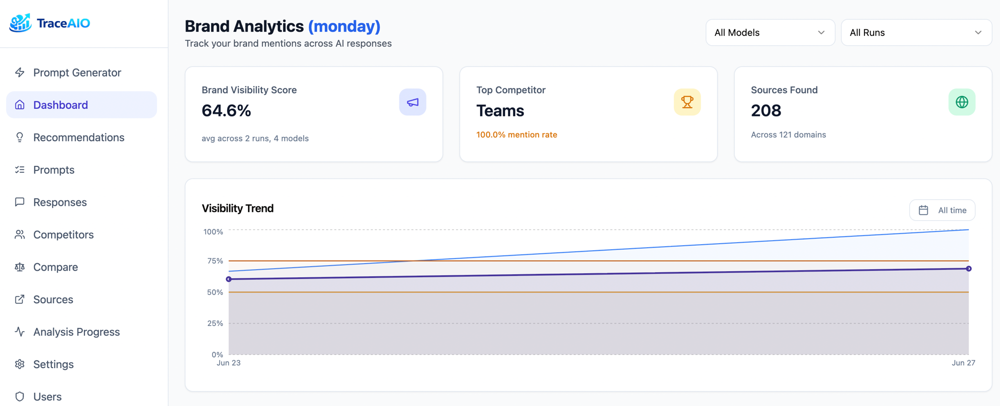

Track your brand
across every LLM
See where ChatGPT, Perplexity, and Gemini mention your brand. Find the gaps. Run real prompts against real models.
Six models. Two transports.
Browser-based for surfaces that only exist in a browser. API-based for surfaces that don’t.
Try the live demo
A real, running TraceAIO instance loaded with sample data — explore the dashboard, prompts, competitors, and sources. No signup required.

Real models. Real responses.
Generate prompts
AI creates brand-neutral prompts on topics that matter in your industry, the kind of questions your potential customers actually ask. Add your own custom prompts too. Prompts are saved and reusable across runs.
Ask each model the way users do
Browser-based models — ChatGPT, Perplexity, Gemini, Google AI Mode — are queried through real browser sessions, exactly what your users see. API-based models — OpenAI and Anthropic — call the provider’s API with built-in web search, the same path their official answer engines use. Either way, you get the production answer, not a stripped-down API approximation.
Uses residential proxies via Apify to run ~15 prompts/min in parallel. Different IP per request, no anti-bot issues, no risk to your infrastructure.
Free but risky. Runs a real browser on your machine, one prompt at a time. Your IP is exposed directly to each LLM provider. Anti-bot systems catch repeated requests from the same address and can block your normal access to these services. Not recommended for production.
Analyze & record
Every response is analyzed: was your brand mentioned? Which competitors showed up? What sources were cited? Results are stored per-run so you can track changes over time, compare models, and find exactly where you're missing.
Ask questions about your data
Connect Claude via MCP and query your brand data conversationally. "Which prompts mention our competitor but not us?" "What sources does Perplexity cite that Gemini doesn't?" "How did our mention rate change after the last product launch?" No SQL required.
Everything you need to
monitor LLM visibility
Prompt Generation
AI creates brand-neutral prompts across topics relevant to your industry. Add your own. Reuse across runs.
Multi-Model Testing
Runs against ChatGPT, Perplexity, Google Gemini, and Google AI Mode via real browser sessions. Not APIs. Exactly what your users see.
Competitor Tracking
Auto-detects competitors from responses. Merge duplicates, block noise, compare head-to-head.
Source Analysis
Track which domains LLMs cite. See brand, competitor, and neutral sources. Find citation gaps.
Scheduled Runs
Schedule once. Run analysis hourly, daily, weekly, or monthly. Stuck runs auto-expire after 24 hours.
Integrations
Webhooks, n8n, REST API, and MCP server. Push results where you need them and pull data however you want.
Connect to your workflow
Push results where you need them. Pull data however you want.
Webhooks
Get notified when analysis completes. Configure a URL with optional Bearer token auth, and run results arrive as a POST. Pipe them into Slack, n8n, Zapier, or your own backend.
n8n
Community node for n8n. Trigger workflows on analysis completion, sync results to spreadsheets, send reports via email, and connect to 400+ other apps.
REST API
Full API with Swagger docs. Fetch runs, responses, competitors, sources, and metrics. Build dashboards, reports, or feed data into your own analytics pipeline.
MCP Server
16 built-in tools for Claude Code and Claude Desktop. Query your brand data conversationally. Compare models, find citation gaps, track trends across runs.

Up and running in 60 seconds
Two ways to deploy. Pick whichever fits your workflow.